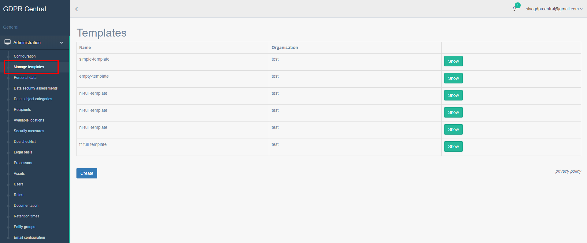

How can I create a new template?¶
GDPR Central allows you to have multiple templates for the creation of new entities. This will allow you to quickly create new entities based on the information gathered in the past.
You can access templates screen by navigating to Administration and clicking Manage templates in the left pane.
Creating a new template¶
To create a new template, please get in touch with us with your requirements, and we will be happy to create customized templates for you.
Viewing templates¶
To view a template, in the left pane, navigate to Administration, and click Manage templates. All the templates available for the creation of new entities are listed here. Click Show to view the details of the template.
Using templates¶
You can create a new entity using these templates. To create a new entity, in the Data Protection Officer landing screen, click New button and create the entity by selecting an appropriate template. You can also create a new entity directly from the templates screen by pressing Create entity with template button.